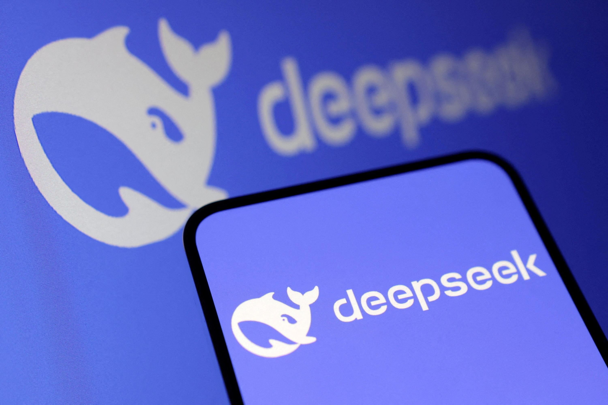

DeepSeek er mye verre enn TikTok
Hvis du er fristet av å gi din informasjon til Kina har du sjansen nå.
Skrevet av: Pål Nisja-Wilhelmsen
Link til selve artikkel
Oppsumering
1. Datainnsamling og personvern: DeepSeek samler omfattende data, inkludert tastaturmønster, mikrofondata, IP-adresse og enhets-ID. Denne informasjonen kan brukes til overvåkning og manipulasjon, spesielt siden DeepSeek opererer under Kinas strenge sensurregler.
2. Sikkerhetsrisiko: DeepSeek bruker 8-bit floating points i sine AI-modeller, noe som gir lavere presisjon og økt risiko for manipulasjon via såkalte adversarial attacks. Dette kan føre til feil i kritiske systemer.
3. Forskjell i potensielle farer: TikTok har også personvernproblemer, men DeepSeek vurderes som mer alvorlig på grunn av sin tilgang til sensitive data og manglende åpenhet.
4. Manipulasjonsfare: DeepSeek kan brukes til sosial manipulasjon, overvåkning og andre uetiske formål, med større risiko for misbruk i autoritære regimer.
Det er ikke noe unikt at apper og nettsteder samler informasjon om deg for bruk til markedsføring, tilpasning av produkter eller for eksempel til nyutvikling.
Som regel sier vi «jada, jada, jada» de gangene vi får advarsel om at en app vil samle informasjon om oss. Kanskje er du en av dem som har lastet ned DeepSeek og sagt ja til følgende:
- Lagring av tastaturmønster
- Tilgang til lyden fra mikrofonen
- Automatisk lagring av IP-adresse (altså hvor du er) og enhets-ID (hva du bruker)
Det har du gjort på en tjeneste som er underlagt de strenge sensurreglene til Kina. En tjeneste som svarer som om den representerer den offisielle synes til landet. Slik som dette:
Taiwan er en del av Kina, og det kinesiske folk har fullstendig evne til å løse sine egne problemer, inkludert Taiwan-spørsmålet.
DeepSeek
Hvis du lurer på om det er noen forskjell om du bruker andre lignende tjenester er dette svaret som ChatGPT ga:
Offisielt heter den Republikken Kina (ROC), og den har en spesiell politisk status som gjør den til et kontroversielt tema i internasjonal politikk.
ChatGPT
Det betyr ikke at det ikke er utfordringer med bruk av ChatGPT. Også der har du potensielle sikkerhetsrisikoer, privacy-utfordringer knyttet til datadeling og mye annet.
Noen store forskjeller er det:
1. ChatGPT (og de andre du har tilgang til i Norge) samler data i samsvar med GDPR-lovene
2. Gemini, ChatGPT og de andre anonymiserer data. Det har ikke DeepSeek sagt de gjør.
3. Kinesiske myndigheter kan overstyre dine individuelle rettigheter på grunn av sine lover, mens du hos for eksempel ChatGPT kan be om sletting og retting av data
4. Informasjonen du gir til DeepSeek kan brukes for målrettet annonsering. Det kan ikke ChatGPTs data brukes til.
En rent teknisk sikkerhetsrisiko er at DeepSeek bruker såkalt 8-bit floating points sett opp mot standarden på 32-bit.
Å bruke 8-bit floating points i AI-modeller betyr at modellen mister detaljer og blir mindre nøyaktig. Dette gjør det lettere for hackere å manipulere data for å lure modellen, noe som kalles adversarial attacks.
Små endringer som normalt ikke ville blitt akseptert i en 32-bit modell kan passere i en 8-bit modell, fordi den ikke oppdager subtile avvik. Dette kan føre til feil i kritiske systemer, som ansiktsgjenkjenning eller medisinske diagnoser.
Kort sagt: Lavere presisjon gir en større åpning for feil og angrep.
DeepSeek er mye verre enn TikTok
TikTok og DeepSeek deler lignende bekymringer knyttet til personvern og datainnsamling, men DeepSeek er potensielt mer skadelig.
TikTok samler data for å tilpasse brukeropplevelsen og målrette annonser, noe som kan være invasivt, men er relativt åpenbart for brukeren.
Plattformen er hovedsakelig designet for underholdning, og de fleste bruksområdene begrenser risikoen for alvorlige konsekvenser utover personvern.

DeepSeek, derimot, har en dypere og mer omfattende tilgang til sensitive data, som kan inkludere medisinsk informasjon, samt analyser som profilerer individer på måter de færreste forstår.
Denne teknologien kan brukes til overvåkning, sosial manipulasjon og til og med diskriminering basert på skjulte mønstre i data.
Mangelen på regulering og gjennomsiktighet forverrer risikoen.
TikTok kan være problematisk for personvern, men DeepSeek er en langt større fare fordi den kan misbrukes til å kontrollere eller manipulere mennesker på et mye mer dyptgående nivå.
Effektivt, gratis og skummelt
DeepSeek kan virke som en effektiv teknologi, men det er viktige grunner til å være forsiktig.
Først og fremst kan dataene den samler inn, misbrukes eller havne i feil hender, noe som utgjør en alvorlig risiko for personvern og datasikkerhet.
Det andre store problemet er muligheten for manipulasjon. Selvfølgelig kan også de amerikanske AI-motorene også manipulere, og det er en helt grei innsigelse i å se at det er klar bias i de amerikanske også.
Plattformen mangler åpenhet rundt hvordan algoritmene fungerer, noe som kan føre til uforutsette konsekvenser eller bias.
Videre kan DeepSeek brukes til overvåkning eller uetisk adferd, spesielt i hender på autoritære aktører.
Hvordan du definerer Kina er opp til deg som leser.